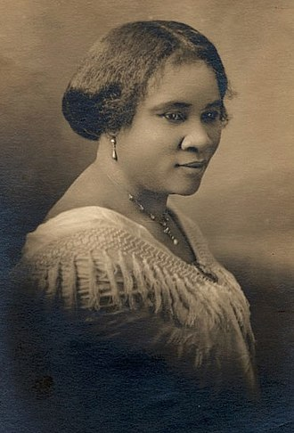

경제 분야 위인

사라 브리드러브 (Sarah Breedlove)
- 분야
- 경제
- 출생 및
사망 - 출생 > 1867년 12월 23일
사망 > 1919년 5월 25일 - 업적 요약
- 흑인 여성용 화장품을 개발해 자수성가 하였고, 미국의 첫 여성 억만장자가 되었다.
- 업적 상세
-
마담 C.J. 워커라는 이름으로 알려져 있다.
열악한 환경에서 살던 그의 모발은 건조하고 잘 부러지는데다 이곳저곳에서 빠지기도 했다.
사라는 여러 제품을 써봤지만 효과가 없었고 만약 자신의 머리를 건강하게 하는 제품을 개발하면 돈도 벌 수 있겠구나 하는 생각을 하게 되었다.
사라는 옷을 빠는 데서 아이디어를 얻어 바셀린과 설파 등을 합성해 모발과 두피를 보호하는 제품을 만들었다.
독한 냄새를 없애기 위해 향료도 섞었다.
그 약물을 써 보니 놀랍게도 자신의 머리털이 새로 나고 곱슬머리도 펴지기 시작했다.
적은 돈을 몽땅 털어 작업장을 만들고 개발한 약물을 병에 넣어 팔기 시작했다.
그 사업이 성공하자 그는 자신의 제품을 판매할 여성조직을 만들었다.
또한 전국적으로 미용문화 학원이라는 것을 열어 제품 판매 훈련을 시키고 이들로 판매망을 구성했다.
사라는 전국을 돌며 제품 판매에 노력했는데 대부분 주민이 흑인인 곳에서 인기가 많았다.
학원에 갈 수 없는 흑인 여성들은 통신교육으로 워커의 제품 사용법을 배웠다.
머지않아 수십만 명이 사라 제품의 사용법을 배우고 사용하게 되었다.
사라는 많은 유색인종 여성들이 빨래터를 떠나 즐겁고 돈을 버는 일을 할 수 있게 만들었다는 점에서 큰 자부심을 가졌다.
그는 큰 재산가가 됐고 전국에 유명해졌지만 자신의 재산을 다른 사람들과 나누었다.
사라는 흑인의 권익향상을 위해 싸우는 전국 유색인종 발전협회와 교회, 문화 단체 등에 많은 도움을 주었다.
흑인 예술가들과 작가들도 지원했으며 흑인들을 상대로 한 폭력을 막는 데도 적극적으로 나섰다.
그는 “나는 인생의 목적을 단순히 나를 위해 또는 나만 쓰기 위해 돈을 버는 것이 아니라 그 일부를 다른 사람들을 돕는데 두고 있다. ”라고 말했다.